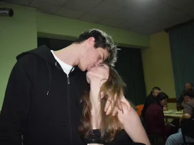
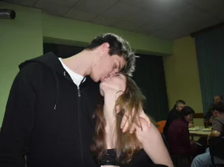
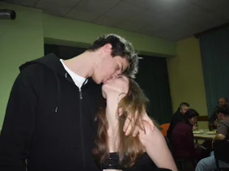
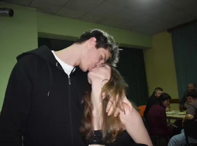

Náš rok • 2025
Naše cesta vzpomínkami...
Vše to začalo
Ten den, kdy jsem ti poprvé napsal.
Víš co byla naše první zpráva?
A pak to vše začalo
Jsme spolu začli chodit.
Víš jak jsem se tě na to zeptal?
Od té doby uplynulo
A i když to někdy bylo těžké, každý den s tebou stojí za to.
Co mě na tobě baví
Jedna z mých oblíbených fotek
Partyyy!!!
A hlavně...
Díky, že jsi.
 


